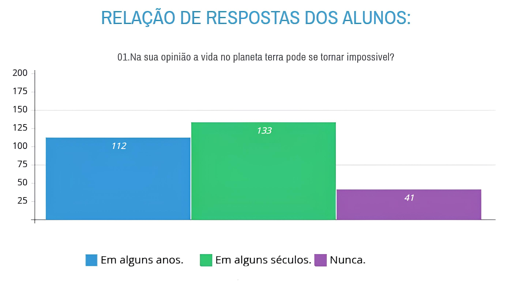
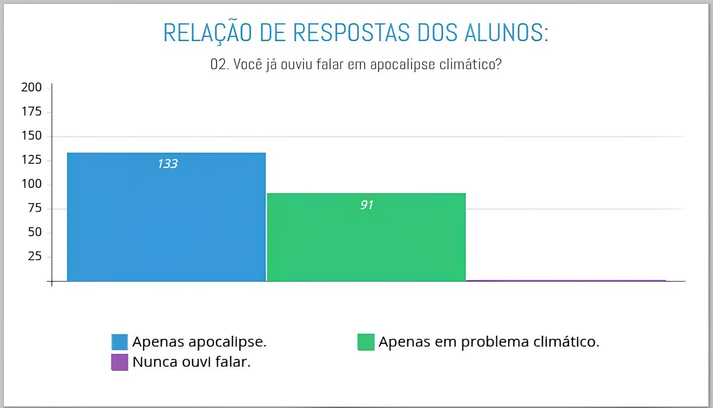
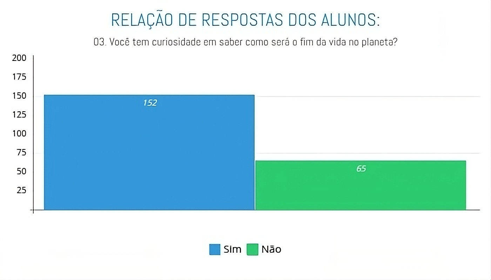

Sobre o Projeto: Navegando no Futuro Climático no Contexto do Ceará Científico
Este site nasceu de uma profunda preocupação com o cenário atual das mudanças climáticas e a crescente discussão sobre o que alguns chamam de "apocalipse climático". Longe de querer gerar pânico, nossa intenção, como projeto do Ceará Científico, é promover o entendimento, a conscientização e, acima de tudo, a esperança e a ação. Acreditamos que, ao fornecer informações claras, baseadas em dados acessíveis, podemos capacitar indivíduos e comunidades a compreender os desafios e a se engajar nas soluções. O "apocalipse climático" não é um destino inevitável, mas um chamado urgente à transformação.
Nossa Missão e Objetivos
A missão deste projeto, desenvolvido para o Ceará Científico, é ser uma fonte confiável e inspiradora sobre o apocalipse climático, oferecendo uma visão abrangente que vai desde os impactos e riscos até as soluções inovadoras e as ações que podem ser tomadas. Nossos objetivos incluem:
- Informar: Apresentar dados e análises sobre os fenômenos climáticos, suas causas e consequências de forma clara e imparcial, com foco na relevância para o Nordeste e o Brasil.
- Conscientizar: Despertar a urgência da crise climática e seu impacto real em nossas comunidades e ecossistemas.
- Capacitar: Oferecer conhecimento e ferramentas para que os visitantes possam entender o problema e identificar soluções viáveis.
- Inspirar Ação: Motivar a participação em iniciativas sustentáveis, tanto em nível individual quanto coletivo, demonstrando que a mudança é possível.
- Promover o Diálogo: Criar um espaço para discussões construtivas sobre o futuro do nosso planeta, incentivando a participação de todos.
O Que Você Encontrará Aqui
Neste site, fruto de um projeto de pesquisa dedicado, você terá acesso a:
- Análises Detalhadas: Conteúdo aprofundado sobre os diversos aspectos do apocalipse climático, incluindo temas como eventos extremos, segurança alimentar, saúde (com ênfase na relação com fungos patógenos, tema de nossa pesquisa) e migrações climáticas.
- Seção de Soluções: Uma área dedicada a apresentar e explorar as inúmeras soluções que já existem e estão sendo desenvolvidas, desde energias renováveis e agricultura sustentável até tecnologias de sequestro de carbono e economia circular.
- Contexto Brasileiro e Cearense: Daremos especial atenção aos impactos e às soluções aplicáveis e relevantes para o Brasil e, mais especificamente, para o Ceará, abordando a riqueza da nossa biodiversidade, os desafios regionais e o potencial de liderança do país na agenda climática.
- Recursos e Ferramentas: Links para estudos, relatórios, organizações e iniciativas que você pode apoiar ou se juntar.
Nossa Pesquisa: A Percepção dos Alunos sobre o Futuro Climático
Para fundamentar a relevância e a necessidade deste projeto, realizamos uma pesquisa com 286 alunos, buscando entender a percepção do público jovem sobre o "apocalipse climático" e o futuro da vida no planeta. Os resultados, que apresentamos a seguir, reforçam a importância de iniciativas como a nossa para informar e engajar:
Gráfico 1: Na sua opinião a vida no planeta terra pode se tornar impossível?
Análise: Este gráfico revela uma preocupação significativa entre os alunos sobre a sustentabilidade da vida na Terra. A maioria dos respondentes (133) acredita que a vida pode se tornar impossível "em alguns séculos", enquanto um número considerável (112) aponta para "em alguns anos". Apenas uma minoria (41) acredita que isso "Nunca" acontecerá, indicando uma percepção geral de risco. Esses dados sublinham a urgência de discussões e ações sobre o tema.
Gráfico 2: Você já ouviu falar em apocalipse climático?
Análise: Os resultados desta pergunta são particularmente esclarecedores. Cerca de 133 alunos afirmaram ter ouvido falar especificamente em "apocalipse climático", enquanto 91 haviam ouvido falar "apenas em problema climático". A quase inexistência de respostas para "Nunca ouvi falar" demonstra que o tema, de alguma forma, já faz parte do imaginário e das conversas dos estudantes, mesmo que com diferentes níveis de profundidade no entendimento do termo "apocalipse climático". Isso valida a necessidade de um site que aprofunde e contextualize essa expressão.
Gráfico 3: Você tem curiosidade em saber como será o fim da vida no planeta?
Análise: Este gráfico é um forte indicativo do interesse do público-alvo. A maioria esmagadora dos alunos (152) demonstra curiosidade em saber "como será o fim da vida no planeta", contra 65 que não têm essa curiosidade. Esse dado é crucial para o nosso projeto, pois mostra que há um terreno fértil para a informação e discussão, indicando que o site atenderá a uma demanda genuína por conhecimento sobre cenários futuros e, esperamos, soluções para mitigá-los.
A Equipe por Trás do Projeto
Este projeto foi desenvolvido com dedicação e pesquisa para o Ceará Científico, uma plataforma que incentiva a inovação e o pensamento crítico entre os estudantes. Somos uma equipe da Escola de Ensino Médio Rita Estelita dos Santos Rodrigues, empenhada em disseminar conhecimento e inspirar a ação climática.
-
Aluno Frente ao Projeto e Desenvolvedor:
- Josenilson Irineu Sousa
-
Alunos Pesquisadores:
- João William Vidal Magalhães da Silva
- Levi Oliveira Santos
- Ana Ingrid do Nascimento Vidal
- João Gabriel de Sousa Martins
-
Professores Orientadores:
- Leiliane Kecia Magalhães - Humanas
- Diana Duarte - Humanas
Nosso Compromisso
Estamos comprometidos em fornecer informações precisas, atualizadas e bem pesquisadas. Nosso conteúdo é baseado em ciência, relatórios de organizações renomadas e as últimas discussões sobre o clima, sempre com o rigor exigido por um projeto científico. Buscamos a objetividade e a clareza, tornando um tema complexo acessível a todos.
Faça Parte da Mudança
Este não é apenas um site; é um convite à ação. Convidamos você a explorar nosso conteúdo, a se informar, a compartilhar conhecimento e a se engajar nas soluções. Juntos, podemos construir um futuro onde a coexistência com o planeta seja a norma, e não a exceção. Acreditamos no poder da educação e da colaboração para superar os maiores desafios.